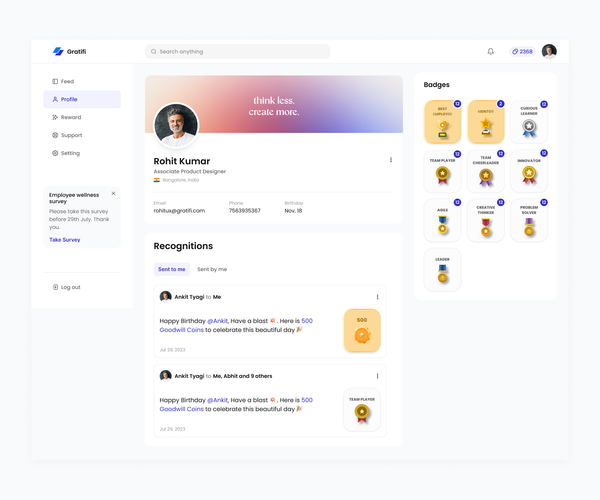
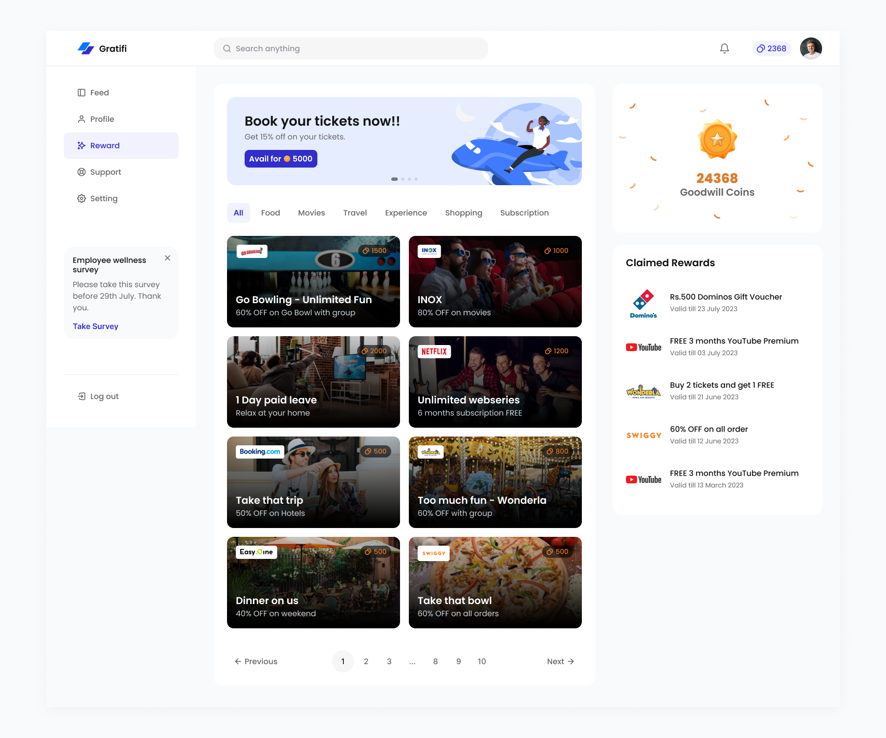
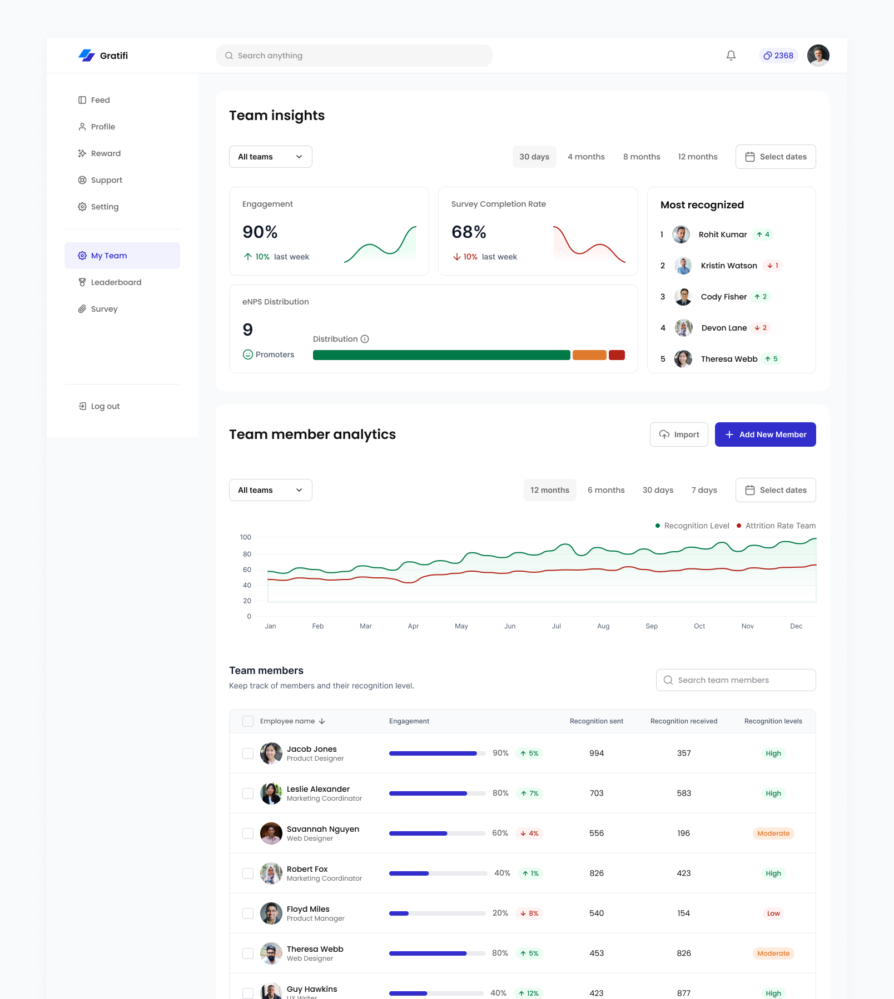
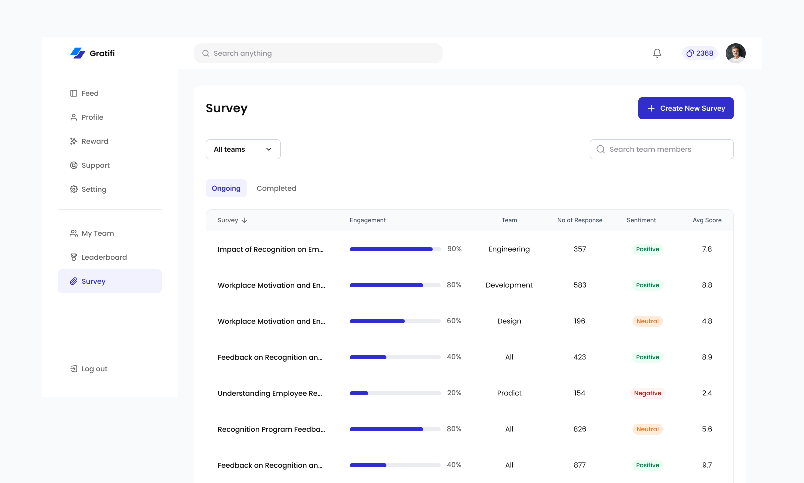
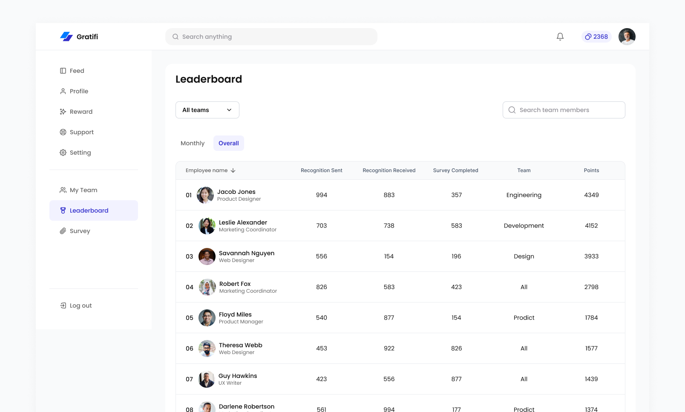
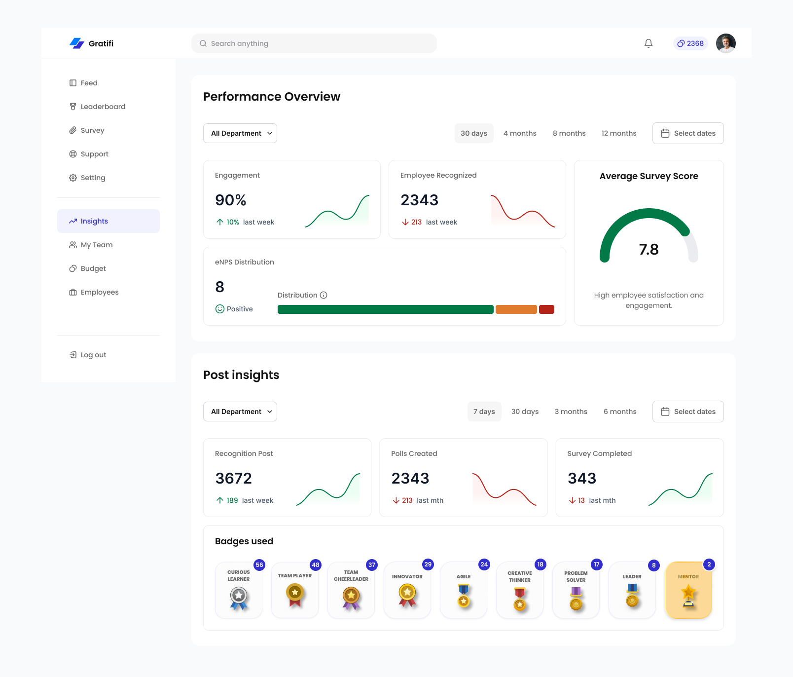
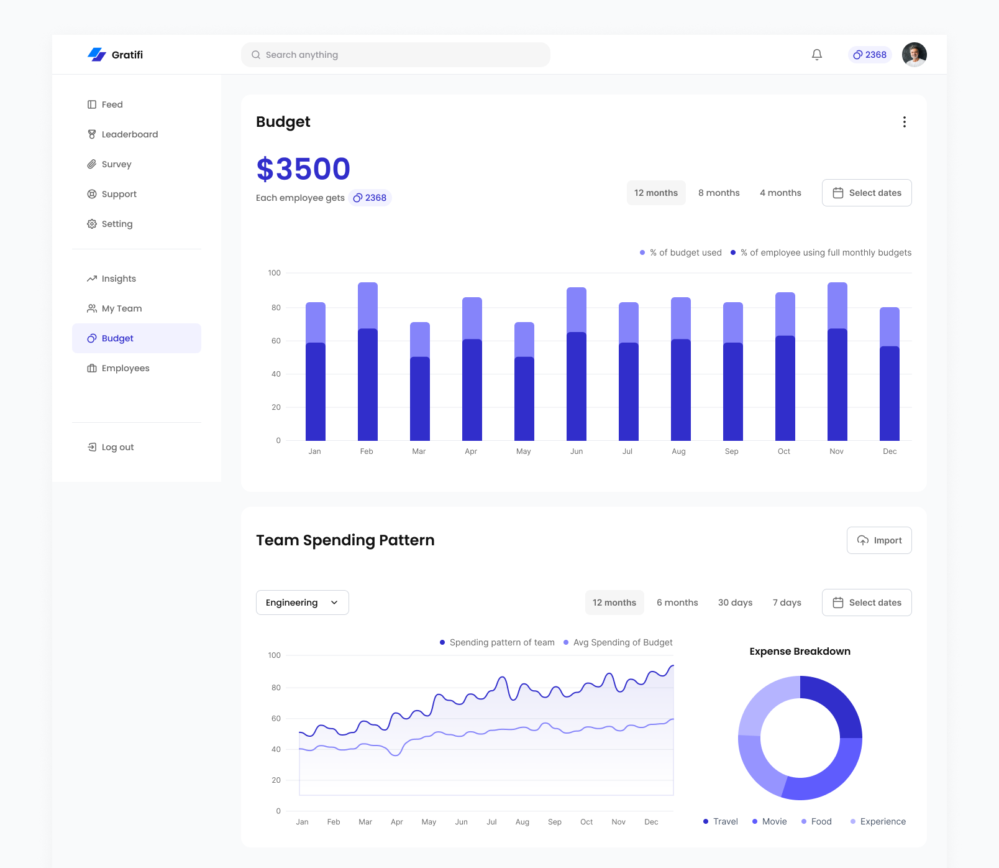
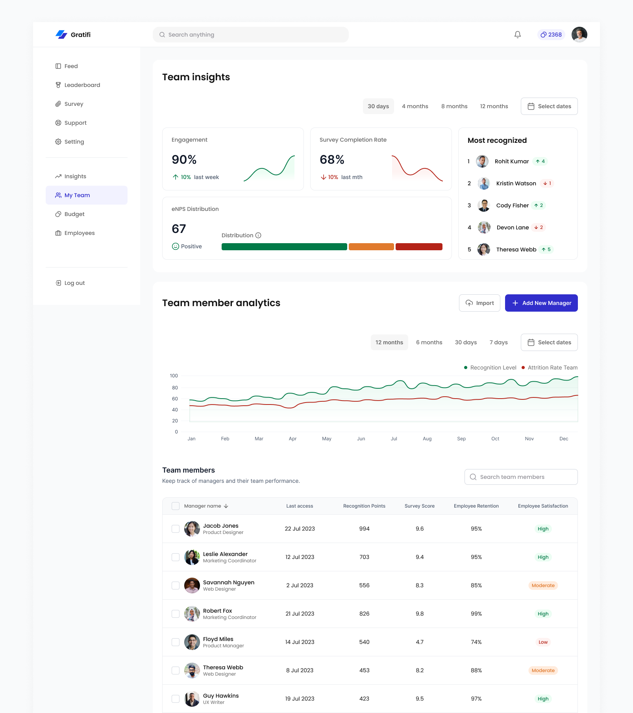

Designs: User - Employee
Home/Feed
A central hub for recognition posts, celebrations, and polls, with a leaderboard highlighting top performers.
- The feed is a space for everyone in the company—employees, managers, and others—to share and connect. At the top, you'll find an easy option to create a new post, with three choices: "Recognize," "Celebrate," and "Polls."
- Recognize: This feature lets employees highlight their peers' achievements by giving them badges and goodwill coins, which can be redeemed for rewards later.
- Celebrate: Use this option to acknowledge important moments like work anniversaries, birthdays, or any special achievements.
- Polls: These help gather opinions or feedback whenever needed.
- To make sure everyone feels included, the AI bot, Praisepal, takes care of celebrations and important announcements. It ensures that everyone gets timely birthday and anniversary wishes.
- On the left side, employees can easily navigate between three main options: "Feed," "Reward," and "Profile."
- On the right side, the "Celebration" tab shows important dates like birthdays and work anniversaries, while a leaderboard highlights the top 10 performers of the month.
- Employees can only see the top 10 ranks on the leaderboard. This choice is intentional to prevent those ranked lower from feeling discouraged or demotivated, as it is important for everyone to feel valued and supported.

Profile
- In the Profile section, employees can view their details, including the badges they've received and the recognition messages they've sent and received from their peers. Everyone has the opportunity to see each other's profiles and access the same information, fostering a sense of community and connection among all employees.

Reward
- In this section, employees can explore the various rewards available and redeem them using the coins they have earned. It's a fun way to celebrate their achievements and enjoy the benefits of their hard work.

Designs: User - Manager
Home/Feed
- This section is the same as the employee feed section.
My Team
- In this section, managers can easily access insights about their team. They can use filters to view real-time data or focus on specific time frames. This allows them to track important metrics like team engagement, survey completion rates, and eNPS distribution. They can also see a list of the most recognized employees in their team.
- These insights are vital for managers, as they provide a clear picture of their team's performance and overall satisfaction. With real-time data, managers can monitor progress, spot areas for improvement, and take timely action to enhance team morale and productivity. Recognizing top performers fosters a positive work culture and boosts employee motivation. Additionally, data on survey completion rates and eNPS distribution helps managers understand employee satisfaction and loyalty, enabling them to create more effective strategies for retention and team success.
- Managers can view a complete list of all employees or filter them by team, allowing for easy comparisons between recognition levels and attrition rates. They can also analyze this data for individual employees.
More details
This feature is crucial for managers, as it helps them understand the link between recognition and attrition rates. By examining recognition data across the team or for specific individuals, managers can spot patterns that might affect employee retention. High levels of recognition often reflect a positive work environment, job satisfaction, and strong engagement, which can lead to lower attrition rates. Conversely, low recognition levels may signal potential problems and serve as early warnings for disengagement or dissatisfaction, possibly leading to higher attrition.

Survey
- Managers can monitor the performance of both ongoing and completed surveys. They have access to important data, including survey scores, sentiment analysis, response counts, and employee engagement levels.
- This feature is essential as it allows managers to track real-time employee feedback, address concerns quickly, and assess overall satisfaction and engagement. Having access to this survey data empowers managers to make informed, data-driven decisions and encourages a culture of continuous improvement within the organization.

Leaderboard
- Unlike employees, managers can view the leaderboard to analyze their team's performance. They have access to all relevant data, including recognition given, recognition received, and completed surveys.
- This access is crucial because it helps managers understand their team's recognition levels, identify top performers, and monitor employee engagement. With this data, managers can make informed decisions and effectively recognize and reward outstanding contributions.

Designs: User - Admin
Home/Feed
- This section is the same as the employee feed section.
Insights
- In this section, the admin gets a complete overview of the entire platform. They can see engagement levels, employee recognition data, eNPS distribution, and average survey scores for the organization or specific teams. With the help of filters, the admin can pull relevant data as needed.
- Additionally, the admin can check insights like the number of recognition posts and polls created, as well as how often badges are used. With this information, they can make necessary adjustments to existing features, add new ones, or remove those that aren't working.

Survey
- The survey section for the admin is similar to the manager's section, but with an important distinction: the admin has access to all surveys from every department. This allows them to get a holistic view of employee feedback across the entire organization, enabling better insights and decision-making.
Budget
In this section, the admin can keep an eye on the current budget and see what percentage has been used by employees. They can also compare this usage with the percentage of employees who have fully utilized their monthly budget.
- Percentage of Budget Used: This metric shows how much of the monthly or quarterly gift budget is being spent. A high percentage suggests that the recognition program is positively impacting the team. On the other hand, a low percentage might mean it's time to focus on improving how many people are participating in the program.
- Percentage of People Using Full Monthly Budgets: The admin can also monitor how many employees are fully utilizing their monthly budget. This helps gauge how well the program is being adopted across various departments. A higher percentage of employees using their full budgets reflects a successful and well-accepted recognition program.

My Team
- In this section, the admin can assign manager roles to individuals and track their performance over time. They can access various metrics, such as the overall engagement of all managers, survey completion rates, the most recognized manager, and eNPS scores. Monitoring the eNPS of managers is particularly important, as it reflects their satisfaction with the company; higher eNPS scores usually indicate a positive work environment.
- Additionally, the admin can evaluate managers' effectiveness by looking at how often employees recognize them, which serves as a measure of their performance. They can also compare the satisfaction of a manager's team with the organization's overall attrition rate. By reviewing survey scores and retention rates for each manager's team, the admin gains valuable insights into team performance and employee satisfaction.

Let's connect! Please E-mail me or drop me a message on LinkedIn.